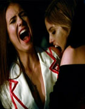

EPISÓDIO 7 – HAUNTED

HALLOWEEN EM MYSTIC FALL: O comportamento de Vicki
se torna cada vez mais perigoso e Stefan tenta ajudá-la.
– Elena tenta convencer Jeremy a manter distância de Vicki.
Caroline deixa o colar de Damon com Bonnie, para que ela
use com sua fantasia de Halloween, e tenta recuperar-lo
quando Damon se surpreende com a habilidade de Bonnie.
Bonnie fala com a sua avó sobre o incidente (atriz convidada Jasmine Guy)
e fica sabendo mais sobre o passado de sua familia.
Tentando encontrar Vicki, Matt tenta abrir a porta da
escola mal assombrada, mas a noite toma um rumo terrível.
Michael Trevino também participa deste episódio.
Ir para GUIA PRIMEIRA TEMPORADA